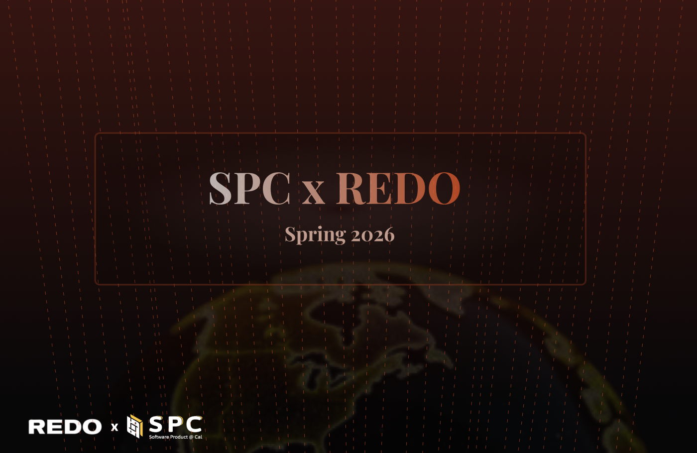

Research, Web Dev
Referral Rewards System
Overview
A referral rewards concept supported by research, prototype, and launch storytelling.
I combined merchant research with a working prototype and polished marketing website to show how the feature works, why it matters, and how it could be introduced to users.